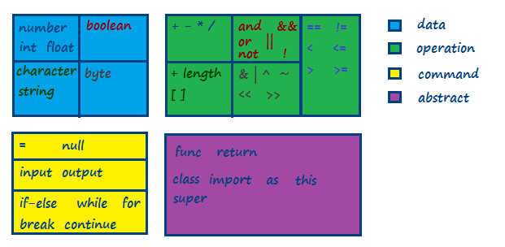
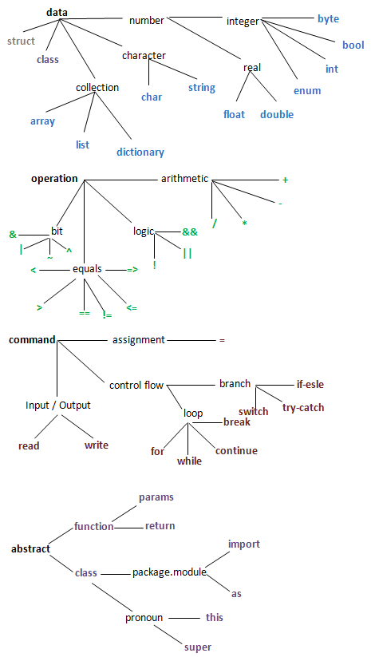
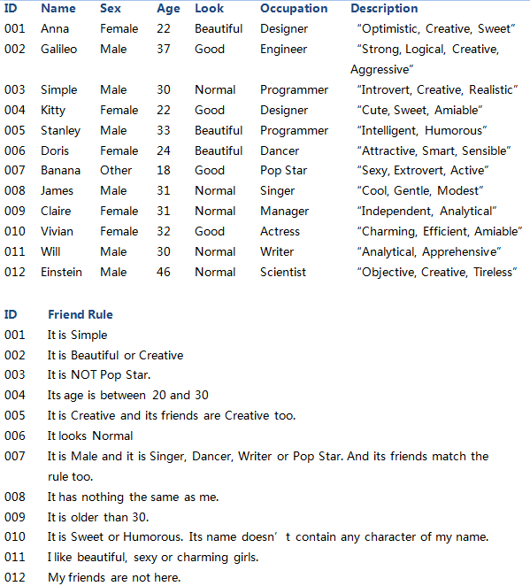
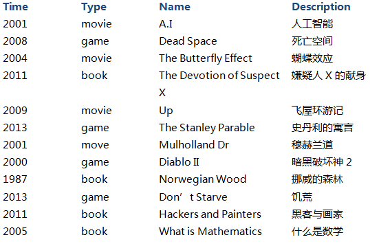
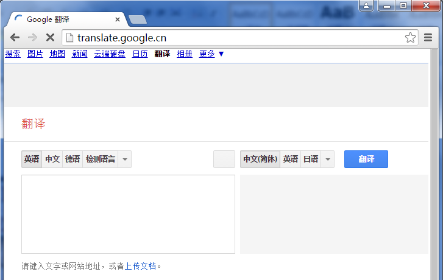
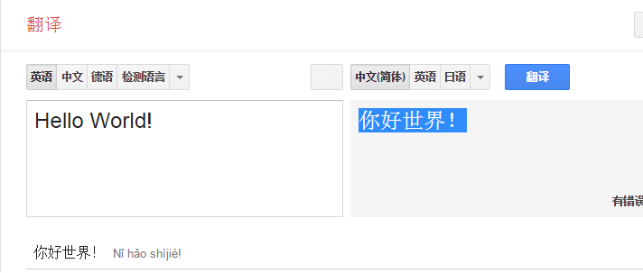
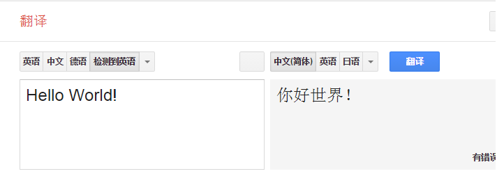
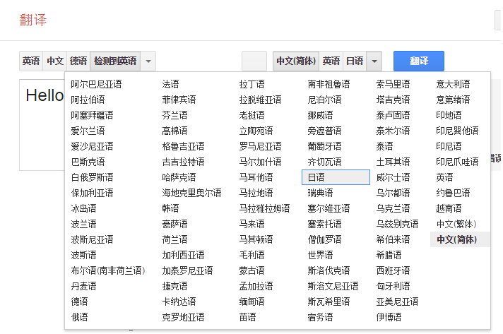
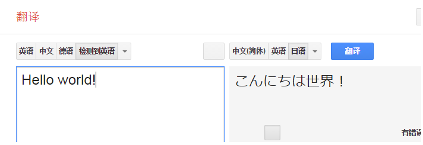

简语-习题
Simple Liang, 2016-09-25
习题（编程的解答要包括：设计，代码，测试用例）
序
1. 语言等价：英文，中文和数学等价吗？
2. 不查资料，试假想并描述语言的演绎史，不求对错，只要能自圆其说就行。
3. D是三角形ABC内一点，证明AB + BC > AD + DC。
4. 至少用两种方法证明勾股定理
第0章
1. 自选一种编程语言，画出其基本元素表如

2. 基于自选的编程语言，写出其 编译-解释 和运行的命令行。
3. 基于自选的编程语言，编写HelloWorld程序，按照用户输入的语言选项（只支持"English", "Chinese"和"Japanese"，大小写不敏感），输出相应语言的"Hello World"。当输入"EXIT"，退出程序。其它输入将输出"Invalid Input!"，3 次后自动退出程序。并思考HelloWorld如何自动化测试。
4. 基于自选的编程语言， 编写Hello World故事，故事情节自定。
5.另选两种编程语言，编写Hello World故事。
第1章
1. 自选一种编程语言，画出其编程元素导图如

第2章（考虑算法复杂度）
1. 实现Math的方法: Abs, Max, Min, Floor, Ceiling
Abs: 一个实数的绝对值;
Floor: 一个小于等于该实数的最接近的整数；
Ceiling: 一个大于等于该实数的最接近的整数；
Max: 多个实数的最大值；
Max: 多个整数的最大值；
Min: 多个实数的最小值；
Min: 多个整数的最小值；
2. 农场有鸡，牛，总共n个头和m只脚，求动物各有多少？
3. 农场有鸡，牛，蛇，总共n个头和m只脚，求动物各有多少？
4. 农场有鸡，牛，蛇，蜘蛛，总共n个头和m只脚，求动物各有多少？
5. 求两个整数的最大公约数。
6. 求三个整数的最大公约数。
7. 求n个整数的最大公约数。
8. 快速判断质数
9. 求阶乘
10. 求前n个Fibonacci数之和
11. 求平方根
12. 求n的m次幂
13. 汉诺塔：有三根杆子A，B，C。A杆上有N个 (N>1) 穿孔圆盘，盘的尺寸由下到上依次变小。要求按下列规则将所有圆盘移至C杆：1.每次只能移动一个圆盘；2.大盘不能叠在小盘上面。如何移？最少要移动多少次？
14. 背包问题：给定一组物品，每种物品都有自己的重量和价格，在限定的总重量内，我们如何选择，才能使得物品的总价格最高？
15. 对输入的一组名字进行排序（升序，降序）
16. 子字符串定位
17. 统计一段文字中各字符出现的次数。
18. People建模
People有如下属性：ID，名字，性别，年龄，职业，朋友，交友规则；有如下方法：判定是否能成为朋友，与某人成为朋友。请列出各人的朋友。

19. Hotel建模
Hotel (id, name, city, country, room types, is available): TotalSales (start date, end date), TotalProfit (start date, end date), TotalProfitPercent(start date, end date), TotalMonthProfit(month), TotalYearProfit(year)
RoomType (id, name, hotel, max occupants, is available, inventories, rate plans)
Inventory (room type id, date, inventory)
RatePlan (id, name, room type, is available, rates, restrictions)
Rate (date, cost, price)
Restriction (date, CTA, CTD)
BookEngie: Search (city, country, occupants, start date, end date), Book (hotel)
第3章
1 一组人围成一圈，数到13的出列，最后留下的是几号？
2 哈夫曼编码
3 最短路径算法
4 整理以下列表：
(1) 年份由小到大
(2) 电影-游戏-书间隔出现
(3) 同年同类型按名字由小到大

5 爱因斯坦问题：
5座房子对应5种颜色，对应5个不同国籍的人。而不同的人喝不同的饮料，抽不同品牌的香烟，养不同的宠物 。问题是：谁养鱼？ 条件：
1、英国人住红色房子
2、瑞典人养狗
3、丹麦人喝茶
4、绿色房子在白色房子左面
5、绿色房子主人喝咖啡
6、抽Pall Mall 香烟的人养鸟
7、黄色房子主人抽Dunhill 香烟
8、住在中间房子的人喝牛奶
9、 挪威人住第一间房
10、抽Blends香烟的人住在养猫的人隔壁
11、养马的人住抽Dunhill 香烟的人隔壁
12、抽Blue Master的人喝啤酒
13、德国人抽Prince香烟
14、挪威人住蓝色房子隔壁
15、抽Blends香烟的人有一个喝水的邻居
第4章
1.石头剪刀布游戏 (rock-paper-scissors)
2. 将People类的数据转换成文本格式存储（序列化），并能反向将文本转换回People类数据（反序列化）。
3. 将People类的数据转换成XML格式存储（序列化），并能反向将XML转换回People类数据（反序列化）。
4. 将People类的数据转换成JSON格式存储（序列化），并能反向将JSON转换回People类数据（反序列化）。
5. 自动下载图片
6. 抛硬币100万次，1000万次，10亿次，正面出现的比率是多少？
7. 抛硬币直到出现“正正反”的概率是多少？“反正正”的概率呢？
8. 如果石头剪刀布游戏石头的概率为40%，剪刀为30%，布为30%，我们有必胜的把握吗？
9. 一对夫妇生了2个孩子，已知其中一个是女孩，求另外一个也是女孩的概率？
10. 羊车门游戏：给三扇门供你选择：一扇门后面是一辆轿车，另两扇门后面分别都是一头山羊。你的目的是轿车，但你却并不能看到门后面的真实情况。主持人先让你作第一次选择。在你选择了一扇门后， 知道其余两扇门后面是什么的主持人，打开了另一扇门给你看，而且，当然，那里有一头山羊。现在主持人告诉你，你还有一次选择的机会。那么，请你考虑一下，你是坚持第一次的选择不变，还是改变第一次的选择，更有可能得到轿车？
11. 你有两个罐子以及50个红色弹球和50个蓝色弹球，随机选出一个罐子， 随机选出一个弹球放入罐子，怎么给出红色弹球最大的选中机会？在你的计划里，得到红球的几率是多少？
12. 利用Selenium 实现自动化测试：
(1) 访问网站http://translate.google.cn/；
(2) 验证网页标题为“Google翻译“；
(3) 验证文本内容中有红色两字“翻译“；
(4) 输入 “ Hello World!”，验证自动翻译为“你好世界！”；
(5) 点击“检测语言”按钮，验证按钮文字变为“检测到英语”；
(6) 选择“日语”，验证文本翻译为“こんにちは世界！”；
(7) 退出程序。




